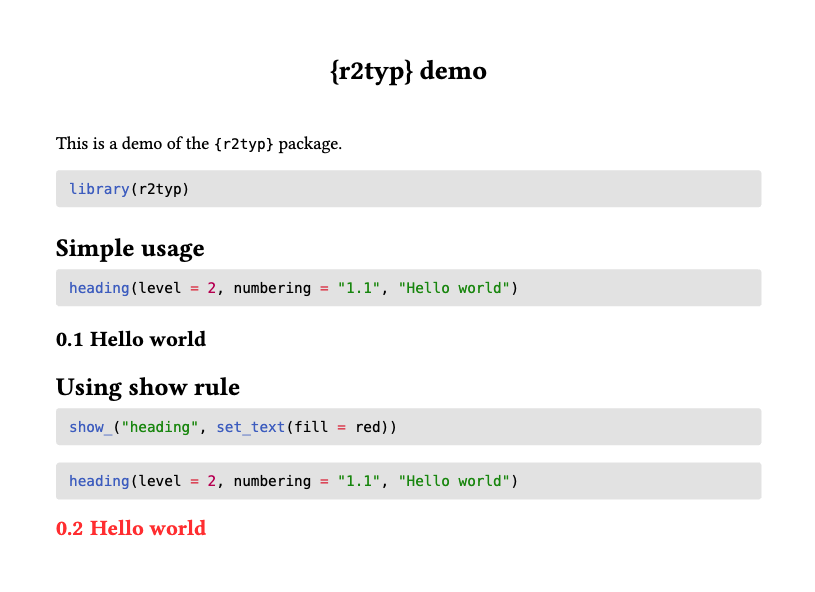
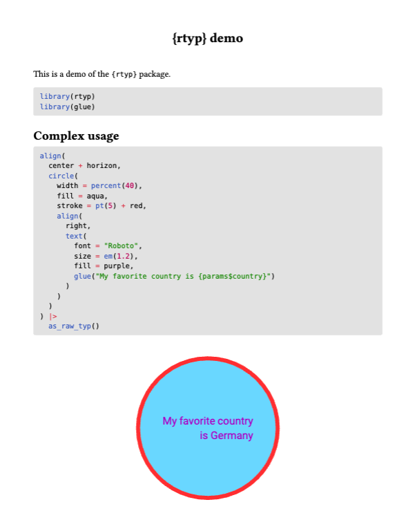

r2typ will output valid format for your Quarto documents assuming you have the knitr package installed, which is probably the case.
Basic usage
---
title: "{r2typ} demo"
format: typst
---
This is a demo of the `{r2typ}` package.
```{r}
library(r2typ)
```
## Simple usage
```{r}
heading(level = 2, numbering = "1.1", "Hello world")
```
## Using show rule
```{r}
show_("heading", set_text(fill = red))
heading(level = 2, numbering = "1.1", "Hello world")
```
Advanced usage
r2typ becomes very interesting when using dynamic values and advanced function calls. For example, here we use a parameter and add it inside the text of a circle:
---
title: "{r2typ} demo"
format: typst
params:
country: Germany
---
This is a demo of the `{r2typ}` package.
```{r}
library(r2typ)
library(glue)
```
## Complex usage
```{r}
align(
center + horizon,
circle(
width = percent(40),
fill = aqua,
stroke = pt(5) + rgb("#ffc300"),
align(
right,
text(
font = "Roboto",
size = em(1.2),
fill = purple,
glue("My favorite country is {params$country}")
)
)
)
)
```